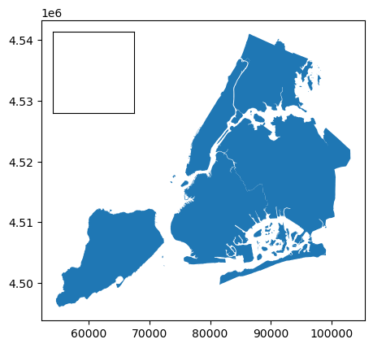
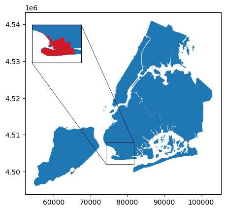
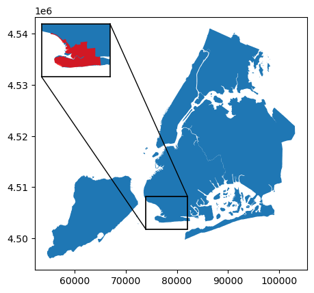

Note
Adding Inset Maps to a Matplotlib Plot#
Inset maps are elements commonly added to maps to show additional detail of a smaller region, show the location of the map within a larger region, or to show another region that is discontiguous from the main portion of the map.
Two options exist for easily adding these elements to the default matplotlib plots generated by GeoPandas’ plot() function: either the functions included in the base matplotlib library, or the matplotlib-map-utils library (see here). The use of each is described below.
Using matplotlib#
Two distinct functions within matplotlib provide the functionality to add inset axes to already-existing axes. Confusingly, both are named inset_axes(), but one lives within matplotlib, and the other within mpl_toolkits.axes_grid1.
Using matplotlib.axes.Axes.inset_axes()#
The first option is to use the inset_axes method available in matplotlib.
[1]:
import geopandas as gpd
from geodatasets import get_path
Creating the Parent Axis#
The “parent axis” is the one that will contain the inset axes (also called a “child axis”). This is the axis that is returned by the plot() function.
[2]:
nybb = gpd.read_file(get_path("nybb"))
nybb = nybb.to_crs(epsg=32619) # Convert the dataset to a coordinate system which uses meters
ax = nybb.plot()
print(type(ax))
<class 'matplotlib.axes._axes.Axes'>

Adding an Inset Axis#
The inset axis (or “child axis”, relative to the “parent axis” created by .plot()) can be added via the inset_axes() method on an axes.Axes object.
This function’s first argument, bounds, requires a 4-tuple of integers of floats, matching (x0, y0, width, height), where (x0, y0) is the lower-left corner of the inset axes, and width and height are the width and height of the inset axes. By default, these values should be in ax.transAxes scaling, i.e. ranging from zero to one, representing a fraction of the parent axis, though users may pass their own desired transformation via the transform argument.
inset_axes() shares common kwargs with the regular Axes class along with others; see the documentation for details.
The axis returned by inset_axes() can then be used to plot data, as normal.
[3]:
ax = nybb.plot()
# Now adding an inset axis
iax = ax.inset_axes([0.05, 0.70, 0.25, 0.25], xticks=[], yticks=[])
# Additional data may now be plotted on this axis
# ex. new_york_state.plot(ax=iax)
Using mpl_toolkits.axes_grid1.inset_locator.inset_axes#
Another option is available in the mpl_toolkits part of matplotlib, via the function inset_axes.
This separate inset_axes() function provided by matplotlib is intended to be used in a similar way to the inset_axes() method of the Axes class. However, it may also (optionally) be paired with mark_inset() (documentation) to connect the inset axes to the parent axes, in the case where the inset axes are showing additional detail of a small area of the parent axes.
[4]:
from mpl_toolkits.axes_grid1 import inset_locator
Creating a Parent and Inset Axis#
At a high level, creating a simple parent and inset axis occurs with more-or-less the same workflow as above.
However, this inset_axes() function is very different from the inset_axes() method of the Axes class; most notably:
It is applied as a standalone function (via
mpl_toolkits.axes_grid1.inset_locator.inset_axes()) rather than as a method of an Axes object (likeax.inset_axes()). As such, the parent axes must be passed as the first argument.Instead of providing a 4-tuple of values specifying the bottom-left corner and width and height of the inset axes, it requires separate values for
widthandheight, as well as alockeyword similar to howLegendobjects are placed.If integers or floats are passed to width and height, they are interpreted as inches. If strings are passed, they are interpreted as percentages of the parent axes, or to the bounding box specified under
bbox_to_anchor.The
lockeyword is similar to thelockeyword ofLegendobjects. It can be a string or an integer. See the documentation for more details.Advanced positioning is also possible via
bbox_to_anchor, andbbox_transform, just likeLegends. See the documentation for more details.
While kwargs are accepted and passed along when creating the inset axes, they must be provided in for the form of a dictionary via the
axes_kwargskeyword.
[5]:
ax = nybb.plot()
# Now adding an inset axis
iax = inset_locator.inset_axes(ax, width=1, height=1, loc="upper left", borderpad=1, axes_kwargs={"xticks":[], "yticks":[]})

Marking an Indicator#
Unique to the mpl_toolkits.axes_grid1 approach, the mark_inset() function can be used to connect the inset axes to the parent axes, in the case that the inset axes is displaying a zoomed-in section of the parent axes. See this documentation for more details.
Important: For this function to work, both the inset and parent axes must be using the same coordinate system.
[6]:
ax = nybb.plot()
# Now adding an inset axis
iax = inset_locator.inset_axes(ax, width=1, height=1, loc="upper left", borderpad=1, axes_kwargs={"xticks":[], "yticks":[]})
# Zooming into the neighborhood of Coney Island
nyc = gpd.read_file(get_path('geoda.nyc')).to_crs(epsg=32619)
coney = nyc.query("name=='Coney Island'")
minx, miny, maxx, maxy = coney.buffer(1000).total_bounds
nybb.plot(ax=iax)
coney.plot(ax=iax, color="red", alpha=0.8)
iax.set_xlim(minx, maxx)
iax.set_ylim(miny, maxy)
# Connecting the inset axis to the main axis
# Note: loc1 and loc2 will accept the integers 1, 2, 3, or 4, each corresponding to a different corner
# 1 = upper right, 2 = upper left, 3 = lower left, 4 = lower right
_ = inset_locator.mark_inset(ax, iax, loc1=1, loc2=3, linewidth=0.5)

Using matplotlib-map-utils#
Other option is the matplotlib-map-utils library.
This library is intended to provide an easier-to-use interface for constructing inset maps (along with scale bars and north arrows) for matplotlib plots than either the inset_axes() method or function.
Using this package, an inset map and its relevant indicators can be made with either functions or classes, which are re-usable across plots; for the purposes of this tutorial, only the functions will be used, though the classes work in much the same way. Tutorials for customizing the map are available within the docs directory of the repository (see here).
[7]:
from matplotlib_map_utils.core.inset_map import inset_map, indicate_extent, indicate_detail
from matplotlib_map_utils import set_size
Set-Up#
If you are working with a common plot size, matplotlib-map-utils has a function called set_size() that bulk-updates a variety of settings so that the relevant object looks “better” at that size.
GeoPandas’ plot() function will create figures of 6.4"x4.8" with the data used in this tutorial, which corresponds to a size of small.
[8]:
set_size("small")
Creating an inset map#
The inset_map() function takes in the following arguments:
ax: the axis on which to plot the inset maplocation: a string indicating the location of the inset map on the plot (seelocundermatplotlib.pyplot.legend(documentation) e.g., “upper left”, “lower right”, etc.)scale: the desired height of the north arrow, in inches; can be a single value for a square map, or a two-tuple of (width, height)pad: the amount of padding between the inset map and the edge of the plot, in inches
[9]:
# Making a basic arrow using the minimum amount of arguments
ax = nybb.plot()
# This is using the default values for `scale` and `pad`
# xticks and yticks are kwargs passed along to the axis constructor
iax = inset_map(ax, location="upper left", xticks=[], yticks=[])
# iax can now be plotted on like normal
Optional additional arguments can be passed, such as coords and transform for positioning the map, to_plot for plotting additional data, and any kwarg accepted as by an Axes object; see the documentation under docs\howto_inset_map.ipynb in the GitHub repo for details.
Creating indicators#
matplotlib-map-utils makes two indicators available:
Extent indicators may be used when the inset map shows a zoomed-out version of the parent axes, providing additional location context; in this instance, the extent indicator will show the boundary of the extent of the parent axes on the inset map.
Detail indicators may be used in the opposite scenario, when the inset map shows a zoomed-in version of the parent axes; in this instance, the detail indicator will show the boundary of the extent of the inset map on the parent axes, and connect the two together, just as
mark_inset())does, above.
To work, both indicators require the CRSs of both the parent and inset axes; however, they do not require the CRSs be the same, and will handle conversion between the two.
[10]:
# Detail indicator example
ax = nybb.plot()
# Now adding an inset axis
iax = inset_map(ax, location="upper left", xticks=[], yticks=[])
# Zooming into the neighborhood of Coney Island
coney = nyc.query("name=='Coney Island'")
minx, miny, maxx, maxy = coney.buffer(1000).total_bounds
nybb.plot(ax=iax)
coney.plot(ax=iax, color="red", alpha=0.8)
iax.set_xlim(minx, maxx)
iax.set_ylim(miny, maxy)
# Connecting the inset axis to the main axis
indicate_detail(pax=ax, iax=iax, pcrs=32619, icrs=32619)

[11]:
# Extent indicator example
# Note that we reverse which data is plotted on which axis!
# Parent axis will have the neighborhood
ax = nyc.query("name=='Coney Island'").plot()
# Now adding an inset axis
iax = inset_map(ax, location="upper right", xticks=[], yticks=[])
# Inset axis will have the whole city
nybb.plot(ax=iax)
# Connecting the inset axis to the main axis
# The indicator is the red box that appears in the inset axis
indicate_extent(pax=iax, bax=ax, pcrs=32619, bcrs=32619)